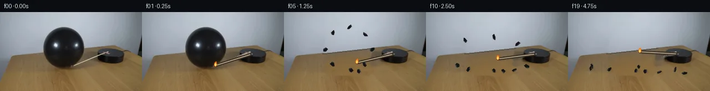

![首帧]()

Round 00
2026-11-05T03:08:44.321065+00:00像素候选变化代码 +355/−0inspection 更新
pixels a55dc8fe17d3712e · code 3ea2918868501eab
查看本轮 generate.py 真实 diff
--- previous/generate.py +++ current/generate.py @@ -0,0 +1,355 @@ +#!/usr/bin/env python3 +"""Generate a deterministic 20-frame continuation from first_frame.png. + +All scene pixels derive from the supplied frame plus local analytic drawing. No +external assets, models, engines, masks, or references are used. +""" + +from pathlib import Path +import math + +import cv2 +import numpy as np +from PIL import Image, ImageDraw, ImageFont + +from artifact_io import save + + +ROOT = Path(__file__).resolve().parent +W, H = 256, 144 +RNG = np.random.default_rng(112) + + +def design_matrix(x, y): + """Cubic low-frequency surface used to reconstruct the occluded scene.""" + x = (x - 128.0) / 128.0 + y = (y - 72.0) / 72.0 + return np.stack( + [np.ones_like(x), x, y, x*x, x*y, y*y, + x*x*x, x*x*y, x*y*y, y*y*y], axis=-1 + ) + + +def fit_surface(image, valid): + yy, xx = np.where(valid) + A = design_matrix(xx.astype(float), yy.astype(float)) + coefs = [] + for c in range(3): + coefs.append(np.linalg.lstsq(A, image[yy, xx, c].astype(float), rcond=None)[0]) + return np.stack(coefs, axis=1) + + +def make_clean_plate(source): + """Replace the balloon, its contact shadow, and the original match arm.""" + yy, xx = np.mgrid[0:H, 0:W] + lum = source.mean(axis=2) + horizon = 83.2 - 0.112 * xx + + # Broad scene fits use only unobstructed, reasonably lit pixels. + wall_valid = (yy < horizon - 3) & (lum > 82) + wall_valid &= ~(((xx > 72) & (xx < 157)) & ((yy > 21) & (yy < 112))) + wall_valid &= ~((xx > 243) & (yy > 35)) + table_valid = (yy > horizon + 4) & (lum > 78) + table_valid &= ~(((xx > 69) & (xx < 165)) & ((yy > 22) & (yy < 119))) + table_valid &= ~((xx > 166) & (xx < 239) & (yy < 102)) + + wall_coef = fit_surface(source, wall_valid) + table_coef = fit_surface(source, table_valid) + A = design_matrix(xx.astype(float).ravel(), yy.astype(float).ravel()) + wall = (A @ wall_coef).reshape(H, W, 3) + table = (A @ table_coef).reshape(H, W, 3) + + # Low-amplitude deterministic texture prevents a plastically smooth fill. + noise = RNG.normal(0.0, 1.0, (H, W)).astype(np.float32) + wall_noise = cv2.GaussianBlur(noise, (0, 0), 1.6) * 1.7 + wood_noise = cv2.GaussianBlur(noise, (0, 0), 0.65) * 2.0 + grain = (1.3 * np.sin(xx * 0.105 + yy * 0.41) + + 0.75 * np.sin(xx * 0.031 - yy * 0.87)) + fill = wall.copy() + fill += wall_noise[..., None] + wood_tint = np.stack([grain + wood_noise, + 0.72 * grain + 0.72 * wood_noise, + 0.42 * grain + 0.42 * wood_noise], axis=2) + table += wood_tint + fill[yy >= horizon] = table[yy >= horizon] + fill = np.clip(fill, 0, 255).astype(np.uint8) + + # Balloon envelope + its neck and broad dark tabletop shadow. + balloon_mask = np.zeros((H, W), np.uint8) + cv2.ellipse(balloon_mask, (115, 66), (41, 42), 0, 0, 360, 255, -1) + cv2.fillPoly(balloon_mask, [np.array([[105, 92], [143, 91], [160, 104], + [151, 114], [90, 113], [73, 103], + [78, 91]], np.int32)], 255) + cv2.ellipse(balloon_mask, (125, 104), (14, 11), 0, 0, 360, 255, -1) + expanded = cv2.dilate(balloon_mask, np.ones((5, 5), np.uint8), iterations=1) + alpha = cv2.GaussianBlur(expanded.astype(np.float32) / 255.0, (0, 0), 1.0) + alpha = np.clip(alpha, 0, 1)[..., None] + plate = np.clip(source * (1-alpha) + fill * alpha, 0, 255).astype(np.uint8) … diff truncated; 268 more lines …